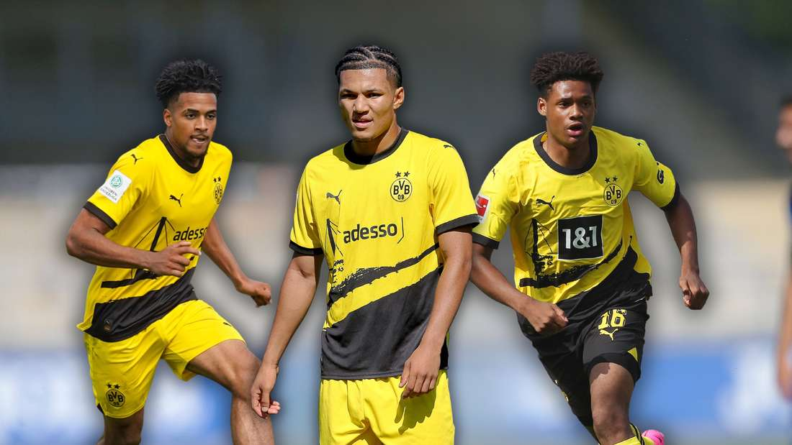
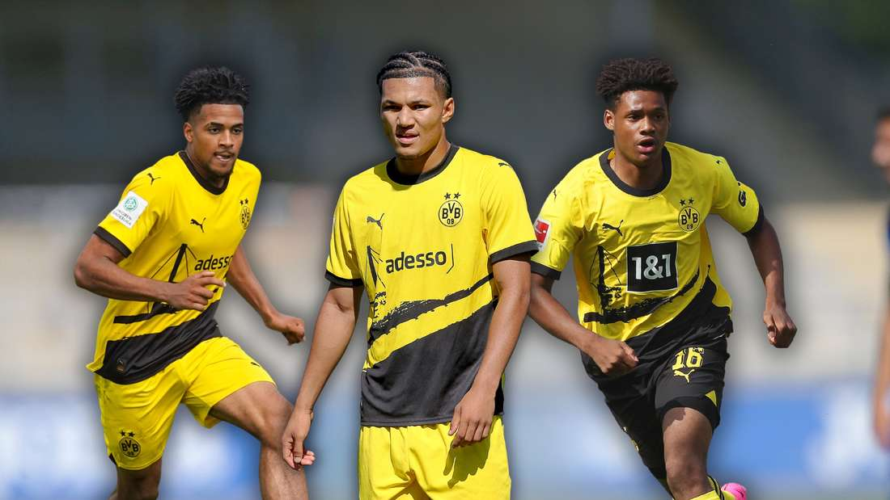
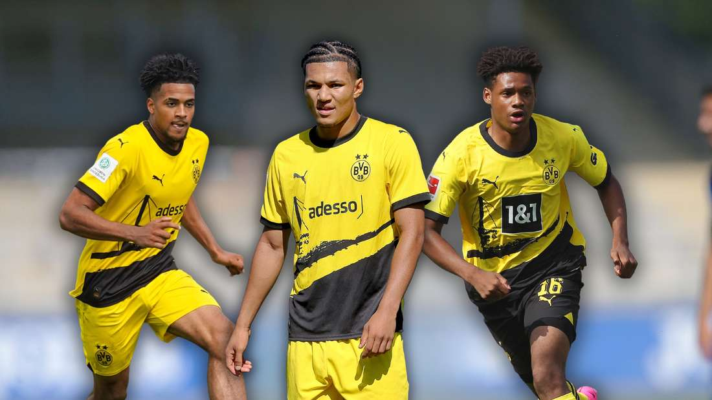

Ich habe dieses Thema gewählt weil Borussia Dortmund ist mein Lieblingsverein ist seitdem ich klein bin. Ich habe auch einen Bezug zum zweiten Weltkrieg, da meine Familie aus Deutschland kommt und ich viele Geschichten über diese Zeit gehört habe. Deswegen möchte ich diese zwei grossen Teile meines Lebens verbinden und herausfinden was sie miteinander zutun haben.
Der Verein Borussia Dortmund besser bekannt als BVB ist einer der führenden Fussballvereine in der Bundesliga, Das zuhause des BVBs ist das Signal Iduna Park in der Stadt Dortmund. Der BVB ist für seine starke Leistung und seine Fans weltweit bekannt.
Vor dem Zweiten Weltkrieg war der BVB noch keine große und relevante Fussballmannschaft, sie waren dem Rivalen FC Schalke klar unterlegen. Jedoch war die Jugendmannschaft 1939 eine der stärksten im deutschen Reich und somit hatte der BVB eine vielversprechende Zukunft.
Der BVB spielte im zweiten Weltkrieg in der Gauliga (Höchste deutsche Liga während des Nationalsozialismus) Der Deutsche Spielbetrieb war während des zweiten Weltkriegs stark eingeschränkt weil viele Spieler in den Krieg eingezogen wurden. So wurden Spiele oft nur regional und nicht auf Topniveau ausgetragen.
Nach dem Zweiten Weltkrieg kam der BVB trotz Verlusten von Vereinsgründer und Spielern stärker zurück wie je und wurde zu einem der führenden Fußballvereine in Deutschland. Der Verein konnte in den Nachkriegsjahren seine Erfolge stätig steigern und gewann zum ersten mal bedeutende Meisterschaften. Die Unterstützung der leidenschaftlichen Fans blieb während des ganzen Krieges ungebrochen, und der Signal Iduna Park wurde zu einem legendären Austragungsort für Fußballspiele. Der BVB setzte sich auch international durch und erreichte bedeutende Erfolge. Diese Zeit legte den Grundstein für die heutige Bedeutung und den weltweiten Ruf des Vereins

xxxx
 
